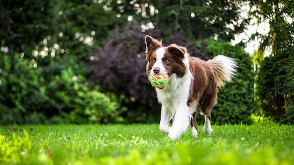

I prefer dogs because they are always active, they always provide something for you to do if you are bored. In addition, cats are always lazy, they are almost never doing anything, and they are hard to enjoy time with. They are also more enjoyable, and they are always happy to see you, whilst cats don't seem to care much whether you are there or not.
